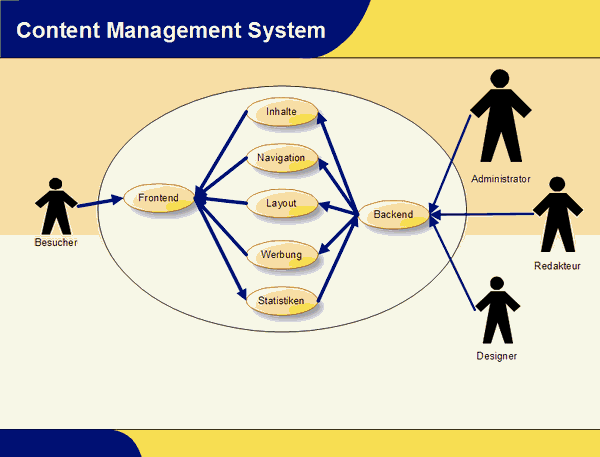
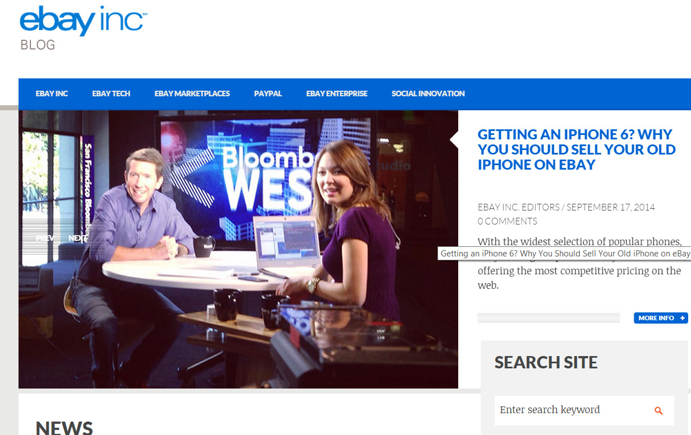
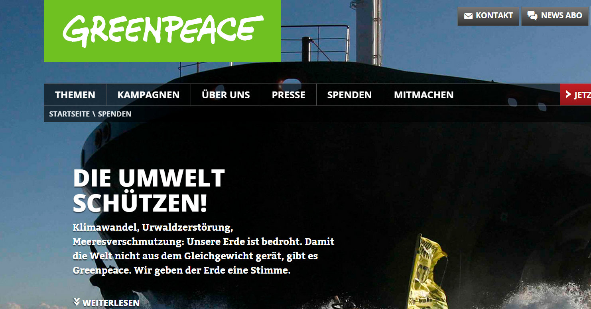
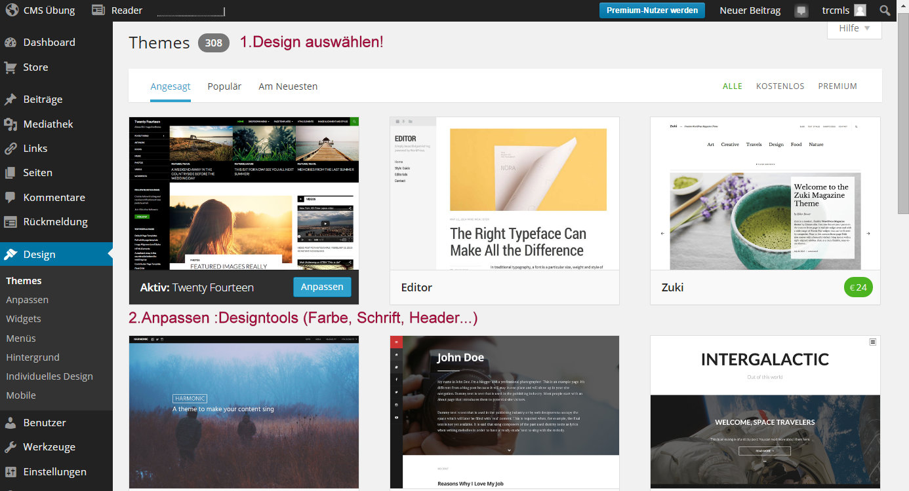
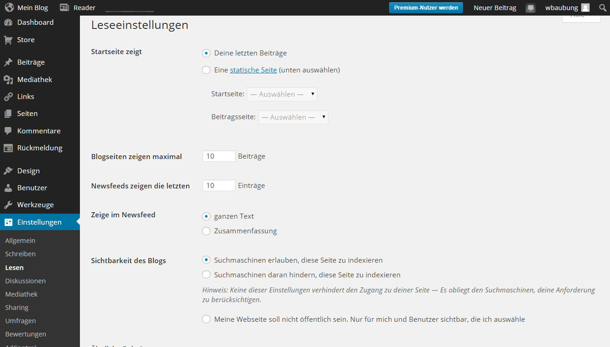
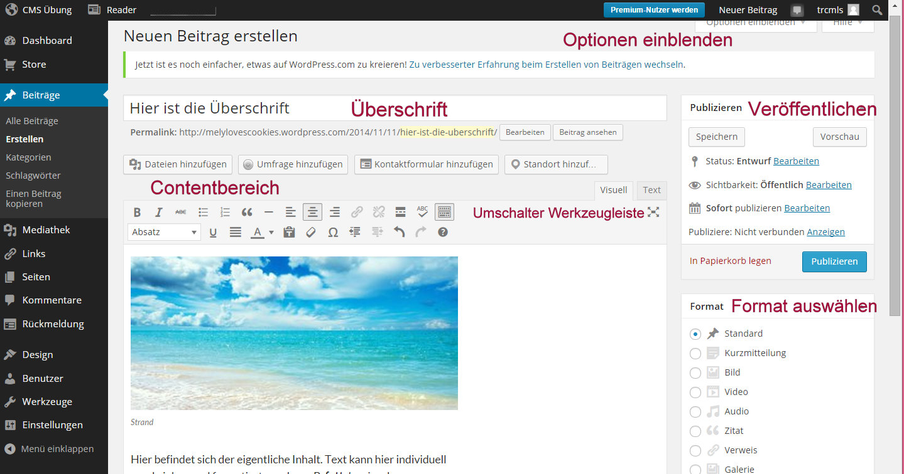
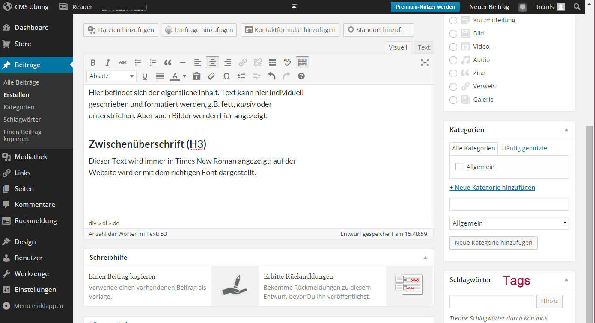

Web-basierte Anwendungen 1
CMS
13. November 2014
Studiengang Medieninformatik an der Fachhochschule Köln
Campus Gummersbach
Gözde Kaya, Turac Melis Ira
Inhaltsangabe
Einleitung
- Was ist CMS?
- Was kann ein CMS?
- Wer braucht CMS?
Hauptteil
- Website mit/ohne CMS
- verbreitete CMS
- Wordpress(erstellen einer Website)
Schlussteil
- Fazit
- Quellen
- Hands on
Was ist CMS?
- Verwaltungssystem des Inhalts (Content)
- Software zur Erstellung, Bearbeitung und Organisation von Text- und Multimediainhalten von Webauftritten
- zur Verwendung sind keine / wenige HTML-Kenntnisse nötig, da die Meisten Systeme eine grafische Benutzeroberfläche besitzen
Was kann ein CMS?
- Trennung von Layout und Content
- Beschaffung und Erstellung von Inhalten
- Präsentation, Publikation und Pflege von Inhalten
- Aufbereitung und Aktualisierung von Inhalten
- Management und Organisation von Inhalten
- Verarbeitung von Inhalten (Workflow)
Schema eines CMS
Website ohne CMS
- besteht aus Startseite und mehreren Unterseiten
- Verknüpfung durch Navigation und Hyperlinks- damit man von einer Seite zur anderen gelangt, ohne die jeweilige Adresse zu kennen
- zeitaufwändig
Website mit CMS
- Eingeschränkte Sichtweisen für Redakteure
- Garantie von aktuellen Informationen
- keine Programmierkenntnisse
- leichte Erstellung und Verwaltung mehrsprachiger Web-Seiten
- Zugriffs- und Versionkontrolle über veröffentlichte Seiten und Inhalte
- einfacher Austausch der Ausgabeformate
- Archivierung ganzer Websites
- Digital Asset Management DAMs
- Entwurftsmodi
- Vermeidung von ungültigen Verknüpfung und Referenzen
verbreitete CMS
- Typo3
- Drupal
- Joomla
- Wordpress
- Contao
Wordpress
- bekannte CMS und Blogging Software
- als Open Source Code vertrieben
- frei zugänglich
- unbegrenzte Vorlagen
- Suchmaschinfreundliche Linkstruktur
- viele spezialisierte Plugins
Unternehmen schätzen...
- hohe Benutzerfreundlichkeit
- niedrigste Entwicklungs-, Betriebs- und Servicekosten
- hohe Anpassungsfähigkeit
- schnelle Einarbeitungszeit
EBAY
GREENPEACE
Erstellung einer statischen Website

Erstellung einer statischen Website
Erstellung einer statischen Website
Erstellung einer statischen Website
Erstellung einer statischen Website
Erstellung einer statischen Website

Quellen
- http://www.e-teaching.org/technik/distribution/cms/
- http://www.cmsmadesimple.de/simples-php-cms-als-open-source/was-ist-ein-cms.html
- http://www.typo34u.de/vorteile-eines-cms
- http://de.support.wordpress.com/post-vs-page/
- http://nblogs.de/wordpress-technischer-aufbau-eines-artikels-einer-seite/
Vielen Dank für Ihre Aufmerksamkeit!
Hands on
Erstellen Sie eine klasische Website die sich an das Design und dem Content der Seite "www.erco.de" anpasst. (Entnehmen Sie dabei gewünschte Bilder und Textinhalte aus der ERCO Seite).
1.Melden Sie sich unter der Seite "www.wordpress.com " unter folgenden Benutzerdaten an: Benutzername: wbaubung Kennwort: Wbaubung2014
2.Erstellen Sie ein neues Wordpress unter "Meine Websites".
3.Wandeln Sie die Website in eine statische Seite.
4. Suchen Sie sich ein Design aus unter "Design --> Themes". a)Verändern Sie das Hauptdesign(Farben, Header, Startseite und Blogtitel)
5.Erstellen Sie Beiträge/Seiten (Bilder ,Inhalt etc.)
6.Erstellen Sie eine Menüstruktur unter "Design-->Menu" und fügen Sie Seiten/Beiträge hinzu.
Diskutiert untereinander, ob CMS sinnvoll für die Website Gestaltung ist!